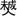
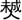
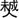

英德祖派下世录 |
||
二十一世 |
||
京公 |
英德 |
配虔氏长娘，夫妇同葬桂东三都犀牛下海形。生子二：法通、法达。 |
二十二世 |
||
英德长子 |
法通 |
匾旌钟灵沤水积厚流芳，配段氏景娘，夫妇仝葬背塘。生子二：敬台、敬召。 |
英德次子 |
法达 |
配杨氏细娘，尹氏二娘。夫妇迁永州府沁田县。 |
二十三世 |
||
法通长子 |
敬台 |
配沈氏，夫妇同葬冷水塘。生子一：开基。 |
法通次子 |
敬召 |
配袁氏雪娘，生子一：开甚，夫妇同往永州府沁田县。 |
二十四世 |
||
敬台子 |
开基 |
配屠氏永娘，夫妇同葬东门冲内匾旌广积流传。生子一：成器。 |
二十五世 |
||
开基之子 |
成器 |
配周氏桂娘、袁氏金娘，夫妇同葬冷水塘乾山巽。生子二：盛佑、佛佑。 |
二十六世 |
||
成器长子 |
盛佑 |
配方氏鲁娘，同葬连珠寨酉山卯。生子一：昌魁。 |
成器次子 |
佛佑 |
配氏。生子一：昌甲。 |
二十七世 |
||
盛佑长子 |
昌魁 |
配杨氏新娘，同葬连珠寨酉山卯。生子二：存用、存琚。 |
佛佑之子 |
昌甲 |
邑廪生，配周氏，同葬白牛坪。生子一：存珊。 |
二十八世 |
||
昌魁长子 |
存用 |
配李氏，同葬后背塘。生子六：文宗、文定、文宰、文实、文苏、文芳。 |
二十九世 |
||
存用长子 |
文宗 |
配胡氏，合葬大鸡洞山口凤形。 |
存用次子 |
文定 |
配? 氏，合葬大鸡洞水口庙背岭人形。 |
存用三子 |
文宰 |
葬大鸡洞山口。 |
存用四子 |
文实 |
葬大鸡洞下盈对门岭人形。 |
存用五子 |
文苏 |
配张氏九娘，合葬东门冲内酉山卯。生子一：学明。 |
存用六子 |
文芳 |
葬大鸡洞山口。 |
三十世 |
||
文苏之子 |
学明 |
配周氏田娘，夫妇同葬冲内寅山申。生子一：国洪。 |
三十一世 |
||
学明 |
国洪 |
字君玉，葬金洞后背塘狮形寅山甲，配叶氏珩娘，葬金洞老虎园船形埂寅山申，又配刘氏秋娘，葬城外连珠寨庚山里。生子二：大经、大纶。 |
三十二世 |
||
国洪长子 |
大经 |
字伟士，耆实邑侯匾旌双寿同珍，生康熙庚午正月十二日，殁乾隆甲申九月二十九日，葬金洞后背塘寅山申。妣何氏观娘，生康熙己巳六月初二日，殁乾隆甲申年。葬金洞狮形寅山申。生子四：士连、士达、士通、士道。生女：一石娥适何钟林。 |
国洪次子 |
大纶 |
葬金洞寨嘴艮山坤，妣陈氏端娘，葬金洞窑坪脑乙山辛。生子三：茂荣、仲彩、爱连。 |
三十三世 |
||
大经长子 |
士连 |
葬金洞后背塘狮形壬山丙。 |
大经次子 |
士达 |
字绍刚，生康熙辛丑正月十七日，殁乾隆壬辰七月十七日，葬金洞后背塘狮形寅山申。妣王氏丙娘，生康熙庚子四月十二日。生子四： |
大经三子 |
士通 |
字绍溪，生康熙癸卯十月十一日，殁乾隆己丑二月初八日，葬金洞老虎园甲山庚，妣薜氏，生康熙丙午十二月十二日殁葬失考。生子五：光俊、光庭、石宁、光洪、光铨，生女一：玉兰适周湛连。 |
大经四子 |
士道 |
字范五，生雍正戊申六月二十五日，殁葬大鸡洞山口丑山未，妣陈氏招娘，殁失考，夫妇同葬。妣何氏玉娘，葬大鸡洞山口冬瓜形脚下巳山亥。生子四：光秀、黑、门仔、旦仔，生女一：石凤适罗士盛。 |
大纶长子 |
茂荣 |
殁葬金洞芋垅埂子山午。配李氏。生子二：力仔、受仔。 |
大纶次子 |
仲彩 |
殁葬金洞窑坪脑乙山辛。 |
大纶三子 |
受连 |
殁与兄同葬。 |
三十三世 |
||
士达长子 |
仔 |
殁葬金洞上东坑土氹里癸山丁 |
士达次子 |
光元 |
字步魁，生乾隆丁卯十一月十三日，殁葬张家垅。妣刘氏，生乾隆癸亥年，殁葬金洞后背狮形甲山庚。生子四：德贤、德澄、德泓、嫩仔。 |
士达三子 |
光惠 |
字圣和，生乾隆戊寅九月二十九日，妣胡氏春娘，生乾隆己卯四月初八日。生子一：德宁，生女一：松芹适江廷玉长子。 |
士达四子 |
光定 |
字松云，生乾隆辛巳四月二十七日，妣何氏锦娘，生乾隆辛巳年，殁葬金洞上东坑土氹里癸山丁，妣骆氏娥娘。生子二：德寿、德厚。 |
士通长子 |
光俊 |
字步文，生乾隆丙寅十月十一日，妣何氏，生乾隆丙寅七月十六日。生子三：德清、德润、德洋，生女三：石珠适黄芹芳、嫩兰、满珠。 |
士通次子 |
光庭 |
字步明，生乾隆乙亥二月初五日，妣何氏，生乾隆甲戍正月十七日，殁乾隆乙卯正月十七日，葬金洞后背塘狮形甲山庚。生子二：德荣、德莺。 |
士通三子 |
石宁 |
殁葬大鸡洞山口巳山亥。 |
士通四子 |
光洪 |
字玉和，生乾隆壬午四月二十九日，殁乾隆己酉九月十二日，葬金洞上东坑土氹癸山丁。妣郭氏，殁葬金洞罗卜斜屋背垅。生子二：德兰、德馨。 |
士通五子 |
光铨 |
生乾隆丙戍十月初十日，殁葬金洞后背狮形庚山甲。配扶氏。 |
士道长子 |
光秀 |
生乾隆丙子八月初十日，殁葬大鸡洞山口壬山丙。 |
士道次子 |
黑 |
殁葬大鸡洞山口子山午。 |
士道三子 |
门仔 |
生乾隆年，殁葬失考。 |
士道四子 |
旦仔 |
生乾隆年，殁葬失考。 |
茂荣长子 |
力仔 |
殁葬金洞石凹芋垅埂子山午。 |
茂荣次子 |
受仔 |
殁葬大鸡洞山口冬瓜形脚下蛇形寅山申。 |
三十四世 |
||
光元长子 |
德贤 |
生乾隆壬辰年，殁葬失考。 |
光元次子 |
德澄 |
生乾隆年，殁葬失考。 |
光元三子 |
德泓 |
生乾隆年，配曹氏，夫妇殁葬失考。生子二：武蕃、武著。 |
光元四子 |
德澜 |
生乾隆年，殁葬失考。 |
光惠之子 |
德宁 |
生乾隆丁酉六月十一日，殁葬失考。 |
光定长子 |
德寿 |
生乾隆年五月初五日，殁葬失考。 |
光定次子 |
德厚 |
生殁葬失考。 |
光俊长子 |
德清 |
生乾隆癸未二月初九日，殁乾隆己酉年，葬外洞水口亥山巳向。 |
光俊次子 |
德润 |
生乾隆乙未年九月十二日，殁乾隆庚戍年，葬外洞水口亥山巳向。 |
光俊三子 |
德洋 |
生乾隆甲辰三月初五日 |
光庭长子 |
德荣 |
生乾隆年，殁葬失考。 |
光庭次子 |
德莺 |
生乾隆年，殁葬失考。 |
光泓长子 |
德涛 |
生乾隆丙午年，殁葬失考。 |
光泓次子 |
德沚 |
生乾隆己酉年。 |